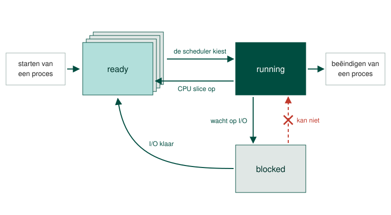
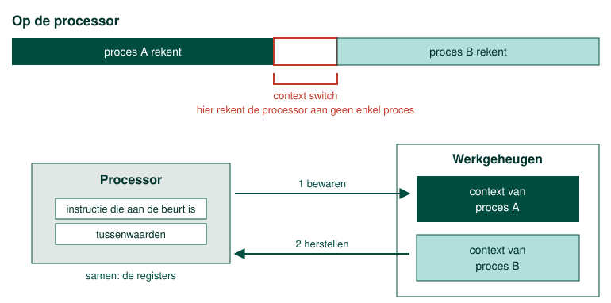
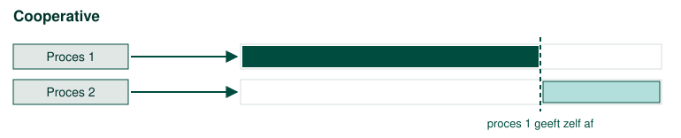
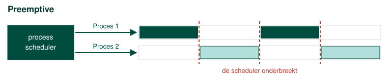

Wanneer we te maken hebben met een multitasking besturingssysteem moet er een mechanisme zijn dat kan schakelen tussen de verschillende processen. De gebruiker moet immers op zijn minst de 'indruk' krijgen dat er meerdere taken tegelijkertijd worden uitgevoerd.
In een computer met 1 processor die 1 kern heeft kan er eigenlijk op een gegeven moment X slechts aan 1 proces gewerkt worden.
Een process scheduler lost dit op door vliegensvlug tussen de verschillende processen te wisselen. Ieder proces dat uitgevoerd wordt krijgt slechts een heel kleine slice van de resources van de processor.

Om te kunnen wisselen moet het mogelijk zijn om een proces even in een wachtrij te plaatsen. In bovenstaand schema zie je duidelijk hoe dit in zijn werk gaat. Bij het starten van een proces komt het in een ready queue terecht. Daar wacht het proces tot het door de process scheduler gekozen wordt om uitgevoerd te worden.
Nadat het een CPU slice (een stukje tijd van de processor) heeft gekregen (running), keert het proces terug naar de ready queue.
Het kan ook zijn dat een proces een lange tijd de processor niet nodig heeft. Dit kan bijvoorbeeld zijn wanneer het proces wacht om een I/O operatie (bijvoorbeeld een schrijf opdracht op de harde schijf) uit te voeren of wacht totdat een bepaalde I/O operatie compleet is.
Het zou dus geen zin hebben om constant dit proces opnieuw te laten uitvoeren als het toch niets te doen heeft. Om die reden kunnen processen ook in de blocked status terechtkomen. Merk op dat een proces niet rechtstreeks uit de blocked status naar de running status kan gaan. Een proces moet altijd gekozen worden door de process scheduler.
Een proces dat van running terug naar ready gaat, moet later verder kunnen waar het gebleven was. De processor werkt op een gegeven ogenblik immers maar aan één ding: hij houdt bij welke instructie aan de beurt is en met welke tussenwaarden hij aan het rekenen is, en die gegevens staan in een handvol snelle geheugenplaatsen in de processor zelf, de registers.

Bij een wissel bewaart het besturingssysteem die gegevens samen in het werkgeheugen. Dat pakketje heet de context van het proces. Daarna haalt het de context van het proces dat aan de beurt is uit het werkgeheugen terug in de processor, en dat proces gaat verder alsof er niets gebeurd is. Dat bewaren en terugzetten samen heet een context switch.
Een context switch kost zelf processortijd, en tijdens die tijd rekent de processor aan geen enkel proces. Hoe kleiner de slices die de scheduler uitdeelt, hoe vaker er gewisseld wordt en hoe meer van de processor er aan het wisselen zelf opgaat. Daar zit dus een evenwicht: te grote slices maken de machine schokkerig, te kleine maken ze traag.
Er zijn twee manieren om te bepalen wanneer zo'n wissel plaatsvindt.
Bij cooperative multitasking doen de processen dat zelf. Een proces geeft aan wanneer het de processor niet meer nodig heeft en draagt de controle dan over aan een ander proces, zoals het stokje in een estafetteloop.
Dat werkt alleen zolang alle processen zich aan die afspraak houden. Een proces dat de controle niet meer afgeeft, door een fout of door slecht ontwerp, laat alle andere op hun honger zitten wachten op processortijd. Dit fenomeen noemen we starvation, en het kan uiteindelijk ook een crash van het besturingssysteem met zich meebrengen.

Bij preemptive multitasking is het de process scheduler van het besturingssysteem die beslist. Die deelt de tijd zelf in en onderbreekt een proces wanneer zijn slice op is, of dat proces daar nu klaar voor is of niet. Eén proces kan de machine zo niet meer gijzelen, en dat is de reden waarom elk hedendaags besturingssysteem op deze manier werkt.

Waar de process scheduler naar kijkt wanneer hij uit de ready queue een proces kiest, is de prioriteit van dat proces.